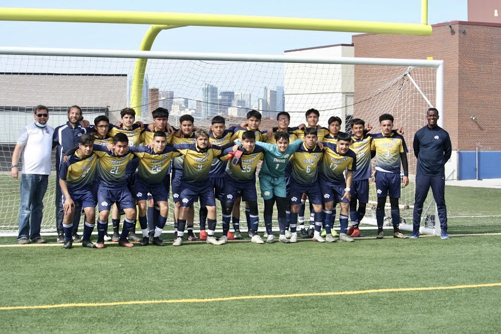
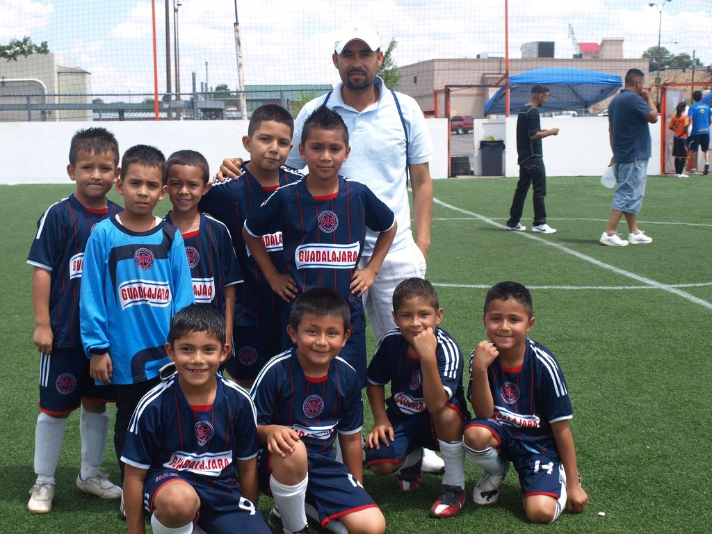
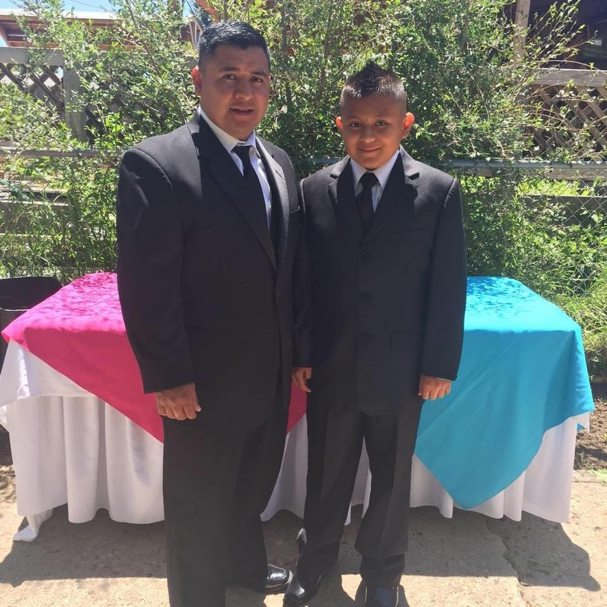
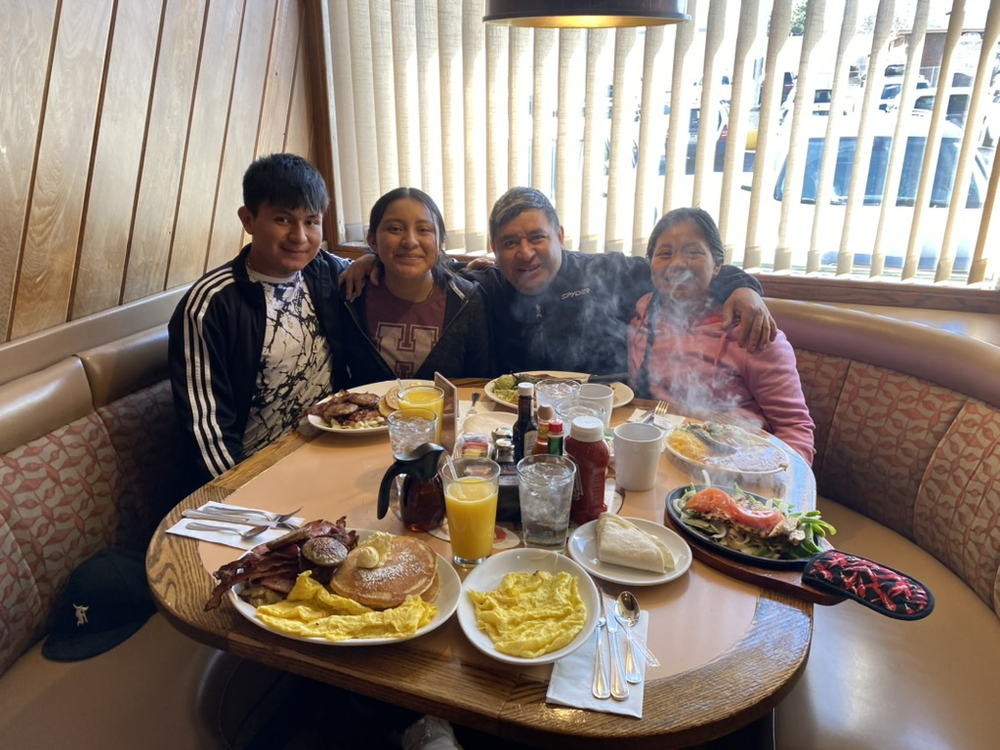
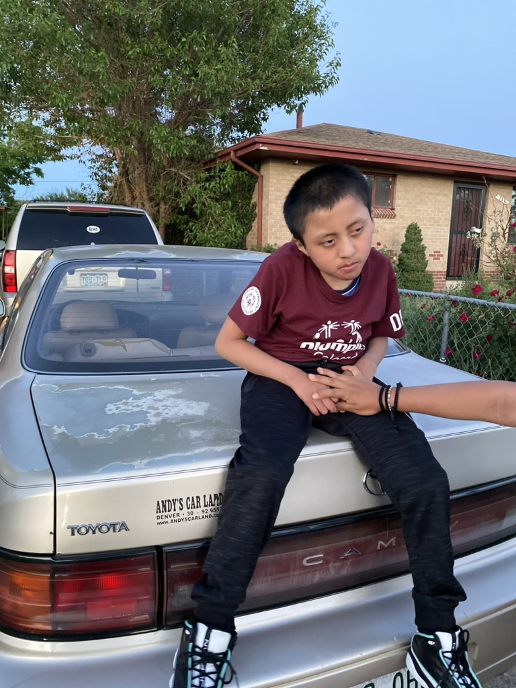

When I disconnect myself from the internet and have time what I love to do is play soccer. My dream has always been to become a professional soccer player and make both my parents proud. I'm 20 years old so I will always tell myself that that there is still hope to make it to the big leagues. But when the weather is bad then I would no go outside and play soccer, instead, I just go to the gym and work out making sure that I am still in good condition to keep playing soccer. The reason why I keep myself physically in good condition and keep pushing myself to get better is that I had surgery on my left knee, so a lot of people believed that I was going to stop playing soccer forever but in reality, I just want to prove all of them wrong I will always come back stronger and better than before. Soccer is and will always be my dream.
 Also as I am studying for my career I am working at a restaurant. The restaurant is owned by my father and I am very thankful my father decided to open a business and teach me how to drive money carefully. We have two restaurants, one is at Brush, Co. and we have another one at Pagosa Springs and I'll always be thankful to god both locations are being successful. Working at the restaurant helped me learn many things that I never thought that I would encounter this in life and with the help of many of my coworkers that has experience managing or being in big businesses I managed to understand and learn more. Although both restaurants were successful my father made my uncle be in charge of the restaurant at Pagosa Springs, which was a bigger area, but not everything was going to be easy he managed to control everything in the back but needed help managing the front. So that's when I came in and decided to help out my uncle, and now I am the Front Manager of the restaurant at Pagosa Springs. It is very stressful I'm not going to lie, but with the help and support from my uncle, father, and my employees I manage to adapt and learn new skills.
Whenever I have time, I love to just spend time with my family. I do not make any promises to anyone whenever I have the time to spend time with my family. I barely have time to spend time with my family, and time is gold most people do not understand. Other than that, I am very thankful that my mom has educated me to be the man I am right now, and I am also thankful for my father for teaching me how to be a man and never look for trouble. All I want is to make both of them very proud and for them to retire knowing that they will not suffer financially and have a successful son.
 